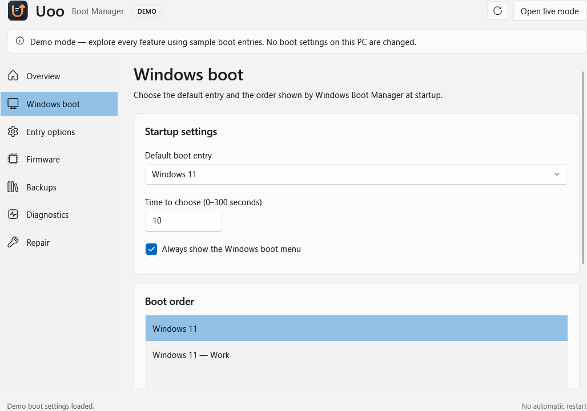
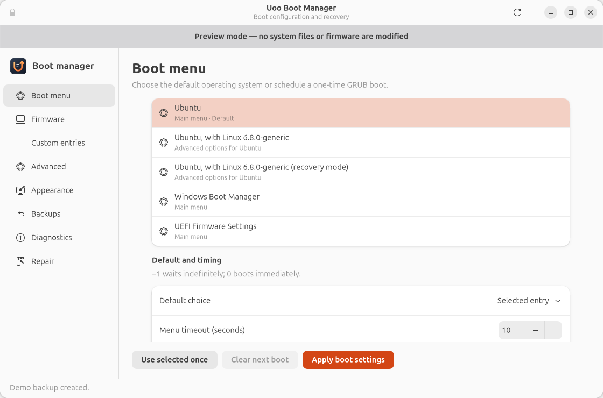

Choose what starts next
Set a default operating system, adjust the menu timeout, or schedule a one-time boot without making it your new default.
Boot configuration, under control. Bring operating-system choices, firmware settings, and recovery into one native desktop.


For professionals managing Windows and Linux workstations, Uoo makes everyday boot decisions easier to understand and review.
Set a default operating system, adjust the menu timeout, or schedule a one-time boot without making it your new default.
Inspect UEFI entries and arrange the boot order from a clear desktop interface. Review your draft before you apply it.
Inspect backups and restore supported settings. System changes use the installed administrator helper and automatic backups.
Each platform uses its native boot tools: Windows Boot Manager and BCD on Windows, GRUB on Ubuntu, and UEFI where available. Feature and repair support depend on the detected system.
Install the native package for your workstation. Try the demo before making any system changes.
Release notes & all packagesVersion 2.2.0 · x64 installer · .NET runtime included
Windows packages are currently unsigned. Install Uoo before using administrator actions.
On Ubuntu 24.04 or newer, add the Uoo PPA and install from your terminal. Future updates arrive through APT.
sudo add-apt-repository ppa:mastercrypt/uoo
sudo apt update
sudo apt install uoo-boot-managerThe WinGet community listing is being prepared. Once accepted, install with the command shown here. Until then, use the Windows download above or follow the local-manifest & publishing guide.
winget install --id HaykJomardyan.UooBootManager --exact --source winget